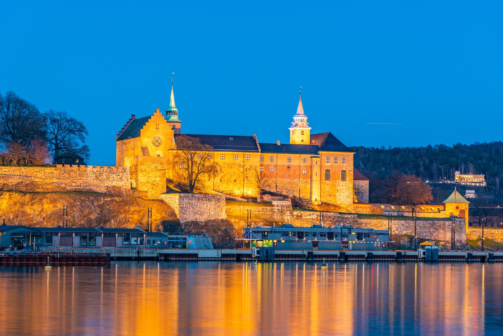
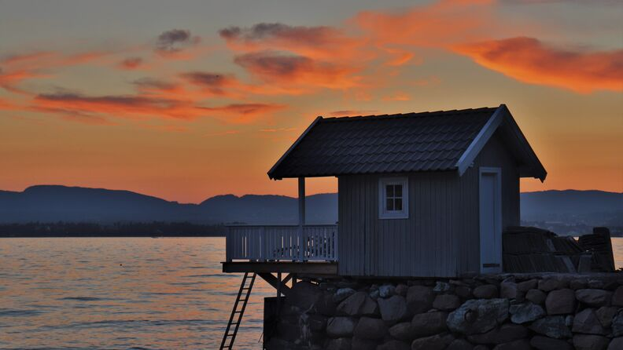
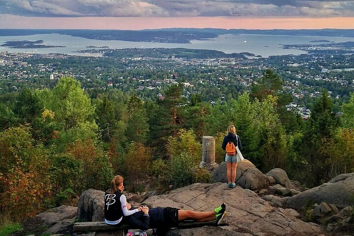

城市的安靜面 · 峽灣跳島 · 森林與雕塑
2026 年 8 月 Bank Holiday · 三天兩夜 · 兩人初訪北歐 · 從倫敦出發
這是一趟為兩位第一次到北歐的旅人設計的慢旅。我們把主軸放在北歐獨有的「寧靜」——水岸的留白、峽灣裡的多座小島、城市邊緣就是森林的奇妙感受。你們已走過許多西歐與南歐城市，所以這裡刻意把「又一座美術館、又一條購物大街」降為次要，把時間留給跳島、森林與靜水。三天不趕，步行也不是規定：累了就跳上電車、渡輪或計程車。
倫敦（LGW / LHR）直飛奧斯陸（OSL Gardermoen）約 2 小時，Norwegian、SAS、BA 每日多班。
去程：週五 8/28 晚間班機，抵達後搭 Flytoget 機場快線 19 分鐘進市區。
回程：週一 8/31（Bank Holiday）晚間班機返回倫敦。
提醒：8/31 是英國 Bank Holiday，挪威並非假日，所有景點與渡輪照常營運。
週五 8/28 晚出發 → 週六、日、一整整三天玩奧斯陸 → 週一 8/31 晚間飛回。零請假、最大化長週末。
點擊標記查看景點詳情與導航。可用按鈕只看單日。藍=Day 1 城市、綠=Day 2 跳島（虛線為渡輪）、深綠=Day 3 森林與雕塑。

先到 1697 年的奧斯陸大教堂（Domkirke）——挪威王室婚禮與國殤儀式的所在，內部有彩繪天花板與巨大管風琴；旁邊的市集拱廊 Basarhallene 是漂亮的磚拱長廊。往北走五分鐘是磚造的三一教堂（Trefoldighetskirken），新哥德式立面值得一看。為什麼去：這是認識奧斯陸舊城的起點，也是行程裡最有份量的宗教建築——但坦白說，比起你們看過的西南歐主教座堂，這裡規模樸素，輕鬆看即可（北歐真正必看的大教堂是特隆赫姆的 Nidaros，見文末補充）。
🕙 教堂每日約 10:00–16:00 · 免費 ⏱️ 30–40 min 📍 導航沿 Karl Johans gate 往海邊走到紅磚雙塔市政廳。為什麼去：這是每年諾貝爾和平獎的頒獎地，挑高大廳裡是北歐最大的油畫壁畫群，描繪挪威的勞動、歷史與神話，免費入內；夏季每日 10:00 / 12:00 / 14:00 有免費英語導覽。出來就是峽灣海濱，可以坐下看船、看海鷗。
🚶 8 min 🕙 每日 09:00–16:00 · 免費 ⏱️ 45 min緊鄰市政廳的木棧海濱，餐廳露台一字排開面向峽灣。為什麼去：這是奧斯陸最舒服的午餐地點之一，海鮮店 The Salmon、在地連鎖 Olivia 都不錯；重點不是用餐本身，而是坐在水邊、看遊艇與小島輪廓，先把跳島的胃口養起來。
🚶 5 min 🍽️ 午餐13 世紀的中世紀城堡與堡壘，居高臨下俯瞰整個峽灣口。為什麼去：這是奧斯陸最能感受「靜」的地方之一——厚實的石牆、修剪整齊的草坡、零星的大砲，遊客比市區少很多。沿城牆走一圈，峽灣與離島在腳下展開，是免費又安靜的觀景台。
🚶 12 min 🕙 戶外區每日 06:00–21:00 · 免費 ⏱️ 1h一座像冰山浮出水面的白色大理石建築，屋頂是連續的斜坡，可以直接走上去。為什麼去：這是奧斯陸最具代表性的「留白」體驗——沒有圍欄、沒有門票，只有大理石、天空、峽灣與緩緩的人群，傍晚光線斜射時格外安靜美麗。建議放慢，在屋頂坐一會。
🚶 15 min · 或電車一站 🕙 屋頂全天開放 · 免費 ⏱️ 45 min歌劇院後方的 Sørenga 是一條伸進峽灣的木棧道，盡頭是一座海水泳池與跳台。為什麼去：這是奧斯陸人的日常——傍晚下班後跳進峽灣游泳。即使不下水，坐在木棧道上看夕陽與靜水也很療癒，附近 Bjørvika 一帶有許多餐廳可以收尾今天。
🚶 10 min 🕙 戶外開放 · 免費 🍽️ 晚餐緊鄰歌劇院的 13 層當代美術館，鎮館之寶是孟克的《吶喊》。為什麼（不一定要）去：你們看過很多歐洲美術館，這座的特別之處在於它是「單一藝術家 + 高樓景觀」的組合，頂樓酒吧能俯瞰峽灣。週六開到 21:00，體力有餘且對孟克有興趣再加碼，否則留待散步晚餐。
🕙 週六 10:00–21:00 · 成人 280 NOK ⏱️ 1–1.5h
從市政廳前的 Rådhusbrygge 4 / Aker brygge 搭乘 Ruter 公共渡輪（夏季 B1/B2 等線），用一張 Ruter Zone 1 日票就能整天上下船，不必另外買船票。6–8 月夏季班次密集（約每 15–30 分一班），可隨意在島嶼間跳躍。最重要的一件事：務必記下最後一班回程渡輪時間，別錯過末班船。
先在碼頭旁的超市或咖啡店買點野餐——島上餐飲選擇有限，自備三明治、水果與咖啡最聰明。為什麼從這裡開始：所有內峽灣島嶼渡輪都從這裡發船，是一天的起點。
⛴️ Ruter B1 / B2 🕙 夏季約每 15–30 分一班離市區最近、最具代表性的一座島，渡輪只要約 7 分鐘。為什麼去：島上有 1147 年熙篤會修道院的石砌遺跡，靜靜躺在草地上；環島步道穿過樹林、礫石海灘與舊砲台，南側有適合戲水的礁岩淺灣。整座島是自然保護區，沒有車、沒有商店喧囂，最能體會北歐那種「城市旁邊就是淨土」的感覺。
⛴️ 渡輪約 7 min 🕙 全天開放 · 免費 ⏱️ 1.5–2h三座由細長地峽相連的小島，曾是奧斯陸第一座機場（水上飛機）的所在。為什麼去：這裡比 Hovedøya 更野、更安靜，步道穿過草原與灌木，是賞鳥與野餐的好地方；島上的 Gressholmen Kro 是一間 1930 年代風格的小酒館（夏季營業），可以喝杯飲料、吃點海鮮。最適合在這裡攤開野餐、放空一兩個小時。
⛴️ 跳島數分鐘 🕙 島全天開放 · 酒館夏季營業 ⏱️ 1.5h渡輪會停靠這座掛滿紅、黃、綠小木屋的島。為什麼去：島上有上百棟 1920 年代起搭建的私人夏季木屋，沿著小徑層層排列，是奧斯陸人世代相傳的避暑天堂；那種色彩繽紛又寧靜的氛圍，是這趟「多島嶼想像」最上鏡的一站。沿碼頭散步、隔著木籬笆欣賞即可（木屋為私人住所）。
⛴️ 渡輪停靠 ⏱️ 45 min若還有時間與興致，可再跳一座更外側的小島。為什麼去：Nakholmen 的跳水碼頭被認為是欣賞奧斯陸天際線最美的角度之一；Heggholmen 上有內峽灣最古老的燈塔之一。看你們當天的步調，純粹加碼用。
⛴️ 渡輪停靠 ⏱️ 彈性搭渡輪回到市政廳碼頭。為什麼這樣安排：跳了一天島，傍晚不再排重點，留給你們在水岸散步、吃頓好晚餐，或回飯店休息。想再走走的話，可彈性接到文末『遺珠之憾』裡的 Grünerløkka 文青街區與 Mathallen 美食廳。
⛴️ 末班船務必確認
全球最大的單一藝術家雕塑公園，超過 200 座 Gustav Vigeland 的銅、鐵、花崗岩人像，核心是 14 公尺高、由 121 個人體交纏而成的「生命之柱」Monolith。為什麼一早去：公園免費、全天開放，但清晨人最少、光線最柔，能安靜地一座座看這些關於生老病死的人像，是行程裡很沉靜的一段。退房寄放行李後前往最理想。
🚋 電車 12 號至 Vigelandsparken 🕙 戶外全天開放 · 免費 ⏱️ 1.5h從公園走到 Majorstuen 站，搭地鐵 1 號線一路往上開進森林。為什麼特別：這條線被稱為奧斯陸最美的地鐵，車廂從市區一路爬升 400 多公尺進入針葉林，窗外景色不斷變化——這本身就是一段風景。
🚇 地鐵 1 號線 · 約 35 min地鐵 1 號線的終點，海拔約 435 公尺，腳下是整座奧斯陸與峽灣。為什麼去：這就是「城市即森林」的最佳體現——你還在公共交通系統上，卻已置身針葉林、湖泊與寧靜步道之間。1909 年的龍頭木雕風格餐廳 Frognerseteren 供應傳統挪威菜與招牌蘋果派，露台坐擁全城與峽灣全景。可在此吃午餐，再沿森林小徑走一段。
🕙 觀景全天 · 餐廳約 11:00–17:00+ 🍽️ 午餐 ⏱️ 2h下山時可在 Holmenkollen 站停一下。為什麼（可選）去：這座造型前衛的滑雪跳台是奧斯陸天際線地標，塔頂觀景台與滑雪博物館能再次俯瞰全城；夏季開放，趕飛機的話略過也不可惜。
🕙 夏季約 09:00–18:00 ⏱️ 1h地鐵 1 號線直接開回市中心，取行李後於 Oslo S 搭 Flytoget 機場快線。為什麼預留充裕時間：機場快線雖快（19 分鐘），但建議在登機前 2 小時抵達機場，從容用個晚餐再上機。
🚆 Flytoget 19 min搭乘晚間直飛返回倫敦，結束這趟寧靜的北歐初訪。
✈️ ~2h這趟行程刻意保持交通彈性：能走就走，不想走就跳上電車、地鐵、渡輪或計程車。以下是會用到的票券。
| 項目 | 說明 | 參考價 |
|---|---|---|
| Flytoget 機場快線 | OSL ↔ Oslo S，約 19 分鐘，每 10 分鐘一班（也可搭較便宜的 Vy 區域火車） | ~230 NOK |
| Ruter 24 小時票 | 電車、巴士、地鐵、島嶼公共渡輪通用（Zone 1）——跳島日就靠這張 | ~127 NOK |
| 計程車 / 叫車 | 累了或趕時間時的彈性選項，Bolt 在奧斯陸可用 | 市區短程約 120–200 NOK |
| Oslo Pass | 多數博物館免費 + 大眾運輸；本行程以戶外為主，密集看館才划算 | ~795 NOK / 48h |
奧斯陸被視為北歐淺焙咖啡的發源地，二十年來一直是咖啡迷的朝聖城市——世界咖啡冠軍開的店、北歐木質極簡的安靜空間到處都是。以下幾家在地評價最高、且氣質最「靜」的咖啡廳，已對應到合適的日程，散步順路就能喝一杯。挪威幾乎全面刷卡，咖啡一杯約 45–70 NOK。
Grünerløkka 區 Grüners gate 1。被公認為全歐洲最好的淺焙咖啡之一，2007 年創店以來幾乎是世界咖啡運動的代名詞；空間小而溫暖，北歐木作配上整牆咖啡豆，濾泡用 AeroPress 手沖，夏天的招牌冰卡布『Al Freddo』很受歡迎。為什麼去：這是奧斯陸咖啡的原點，喝一杯就懂北歐淺焙的乾淨與花果香。
🕙 平日 08:30–18:00、週末 11:00–17:00 · 🗺️ 適合搭配 Day 2 Grünerløkka 傍晚
Bjørvika 區 Operagata 67B，就在歌劇院與 MUNCH 旁。創辦人 Talor Browne 曾是 Tim Wendelboe 的首席烘豆師，咖啡甜淨偏淺焙，但真正的招牌是色彩繽紛的手工甜甜圈，還有貝果、餅乾與肉派；批次手沖可免費續杯，在物價高的奧斯陸格外划算。為什麼去：Day 1 在歌劇院／MUNCH 一帶散步時最順路的一站。
🍩 招牌甜甜圈 + 免費續杯 · 🗺️ 適合 Day 1 歌劇院／MUNCH 一帶
Grünerløkka 區 Thorvald Meyers gate 18A。2013 年開業，世界手沖冠軍坐鎮，專注乾淨明亮的淺焙；夏天的冰手沖（V60 沖後過冰）用肯亞豆沖出紅莓果香，是城裡少數的好喝冰咖啡。注意：Aker Brygge 分店已於 2025 年 10 月結束，主店仍在。為什麼去：跟 Tim Wendelboe 同一條街區，可一次走訪。
🕙 平日 07:30–17:00、週末 10:00–17:00 · 🗺️ 與 Tim Wendelboe 同區
市中心 St. Olavs gate 2。1963 年的復古挪威設計空間，白天是咖啡館、晚上變雞尾酒吧，傢俱與器物都可購買；如今已是國際品牌（東京、首爾都有分店）。為什麼去：氛圍濃厚、最有奧斯陸味道的一家，Day 1 或 Day 3 在市中心散步時順路，想坐久一點放空很合適。
🍸 白天咖啡、晚上雞尾酒 · 🗺️ 適合 Day 1／Day 3 市中心
Grünerløkka 區 Rathkes gate 9C，與挪威設計選品店 F5 共用空間。米白極簡、安靜，每日批次手沖、義式與少量單品手沖，抹茶拿鐵也做得很好，還有戶外長椅可曬太陽。為什麼去：是這份清單裡氣質最『靜』的一家，與整趟寧靜主軸最契合，適合想避開人潮慢慢坐。
🍵 極簡空間 + 好喝抹茶 · 🗺️ Grünerløkka 區
Java 在 St. Hanshaugen 區 Ullevålsveien 47。由全球第一屆世界咖啡師冠軍 Robert Thoresen（2000）創立，自家烘豆 Kaffa，以黑咖啡濾泡見長，客群成熟、節奏從容；旁邊就是 St. Hanshaugen 公園。為什麼去：偏離觀光區的在地老店，若你們想在 Vigeland 公園或市中心北側找個安靜的本地咖啡館，很適合。
☕ 經典黑咖啡濾泡 · 🗺️ 適合 Day 3 Vigeland 一帶
小提醒：跳島日（Day 2）島上沒有這些咖啡廳，但 Hovedøya 夏季有 Klosterkroa 小酒館可喝杯咖啡配鮮蝦；想認真喝咖啡的話，建議安排在跳島前的早晨或回到市區後的傍晚。
最進階的玩法：把咖啡串成一條約 2.5 公里、可輕鬆步行的「咖啡散步」。Grünerløkka 是奧斯陸咖啡密度最高的街區，三家頂尖店幾乎走路即到，途中還能順路串起 Akerselva 河岸與 Mathallen 美食廳。適合安排在 Day 2 跳島回到市區的傍晚，或任一天的空檔。全程平緩，能走就走，不想走隨時可搭電車 11、13 號。
從 Akerselva 河岸的室內美食廳出發，先吃點麵包或輕食墊胃；這裡也有咖啡可喝。不餓的話可直接從第二站開始。
走過 Akerselva 河岸小徑到 Grüners gate，這是本路線的靈魂——世界級淺焙。店面小，點一杯手沖或招牌 Al Freddo 冰卡布，站著或坐在門口的小凳上慢慢喝。
走到 Thorvald Meyers gate（Grünerløkka 主街）上的 Supreme。一杯乾淨批次手沖或夏季冰手沖，順便到 Olaf Ryes plass 廣場歇腳看在地生活。
收尾在 Rathkes gate 的 Kuro——極簡、安靜，點杯抹茶拿鐵或手沖，坐戶外長椅收束這趟咖啡散步；與整趟『寧靜』主軸最契合。還想再走，可接 Mathallen 或河岸。
總長約 2.5 km・純走約 25–30 分鐘（不含喝咖啡時間）。市中心的 Fuglen（St. Olavs gate）與 St. Hanshaugen 的 Java 不在這條線上，但都可單獨安排在 Day 1／Day 3 的市中心散步中。地圖上的棕色虛線即為這條咖啡散步動線。
研究時找到不少有意思的地方，但三天裝不下，或與你們在西南歐看過的類型相近，所以放在這裡。如果其中一天提早結束、或你們想延長停留，都可以彈性補進來。
從市政廳碼頭搭渡輪約 15 分鐘的綠色半島，集中了 Fram 極地探險船（保存完整、可登船）、Kon-Tiki 木筏博物館與挪威民俗博物館（露天古木屋與木板教堂）。為什麼值得：Fram 與 Kon-Tiki 是挪威獨有的極地與航海故事，跟一般歐洲美術館很不一樣。注意：知名的維京船博物館整修中，預計 2027 才重新開放。
城市東側山丘上的免費雕塑公園，作品散落在森林步道間。為什麼值得：這裡既是自然又是藝術，且擁有眺望奧斯陸與峽灣的最佳角度之一——據說正是孟克畫《吶喊》時站立的位置。安靜、在地、與本行程『城市與自然交錯』的氣質完全契合。
奧斯陸最潮的街區：獨立咖啡、二手店、街頭藝術與 Olaf Ryes plass 廣場，旁邊是 Akerselva 河岸步道（瀑布與舊工廠改造空間）與室內美食市集 Mathallen。為什麼放這裡：氛圍類似你們在西南歐逛過的文青街區，所以列為彈性選項——很適合在跳島日傍晚或任一天空檔補進來吃晚餐、喝咖啡。
2022 年啟用的國家博物館（Nasjonalmuseet）是北歐最大藝術館，藏有另一版《吶喊》；海邊的 Tjuvholmen 則有 Renzo Piano 設計的 Astrup Fearnley 現代美術館與小沙灘。為什麼放這裡：兩者都很好，但都是『又一座大型美術館』，與你們的西南歐經驗重疊，故列為雨天備案。開放時間：國家博物館 週二/三 10–20、其餘 10–17。
地鐵 3 號線終點即達的森林湖泊，環湖步道平坦約 3.3 公里，是奧斯陸人慢跑、野餐、夏天游泳的後花園。為什麼值得：若 Frognerseteren 還不夠過癮，這裡能更深入體驗 Nordmarka 森林的寧靜，且交通極方便。
你問到「值得一去的大教堂」——北歐真正必看的是特隆赫姆（Trondheim）的 Nidaros 大教堂，斯堪地那維亞最大的中世紀哥德式主教座堂，建於聖奧拉夫墓地之上，西立面的雕像群極為壯觀。為什麼沒排進來：它距奧斯陸需搭飛機約 1 小時或火車約 6.5 小時，三天兩夜難以納入。若日後安排北歐長行，非常推薦專程一訪。